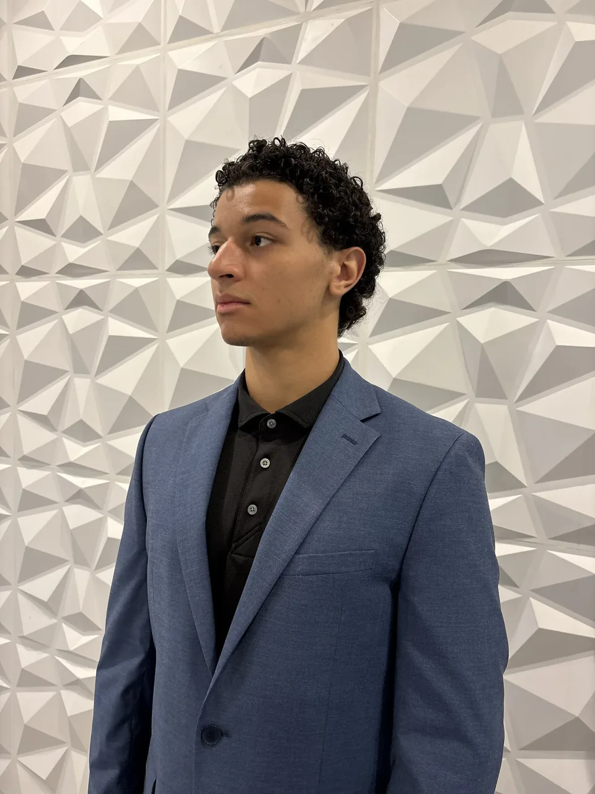
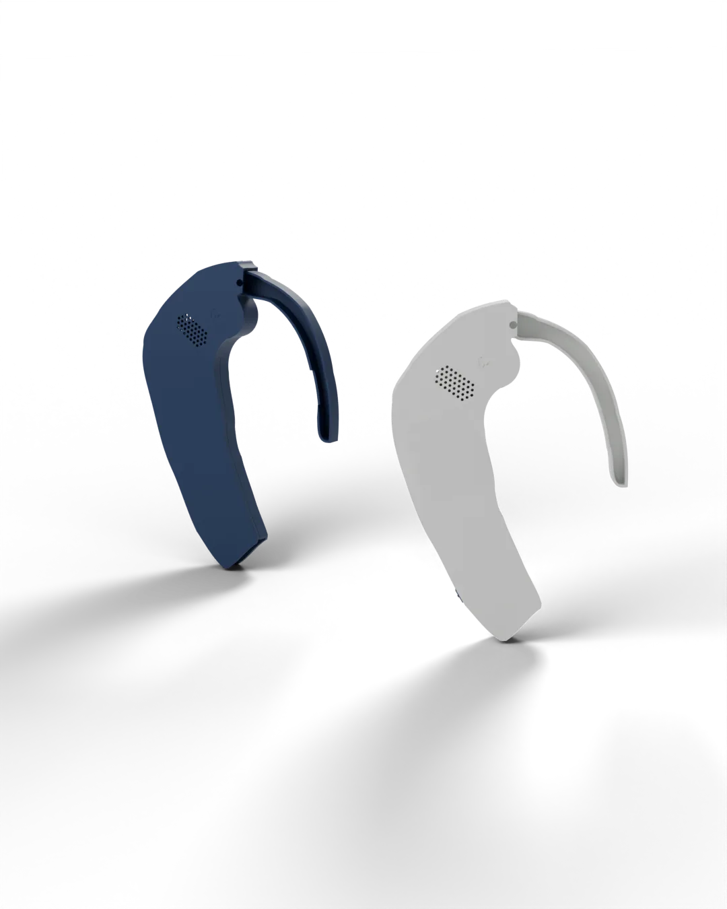
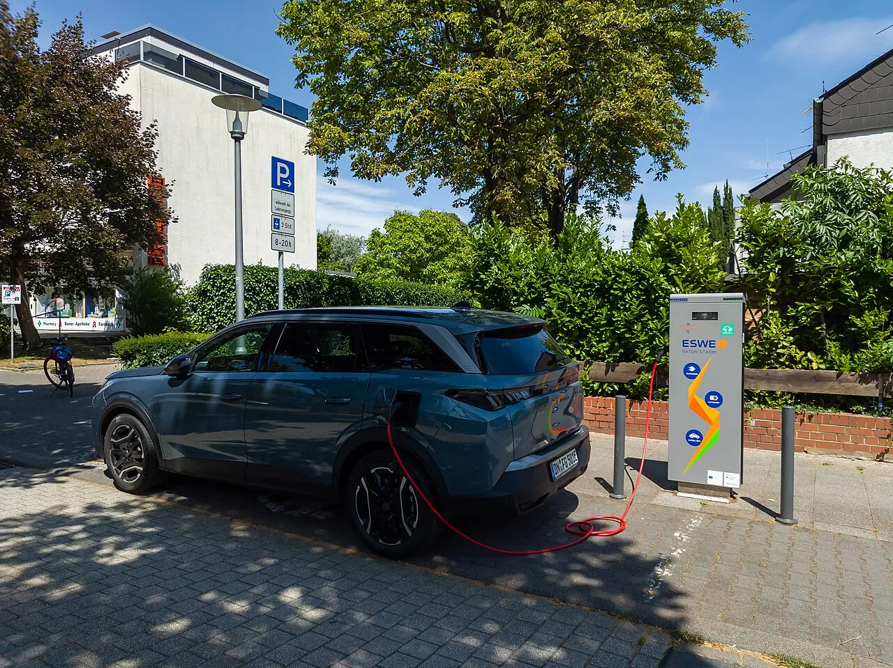
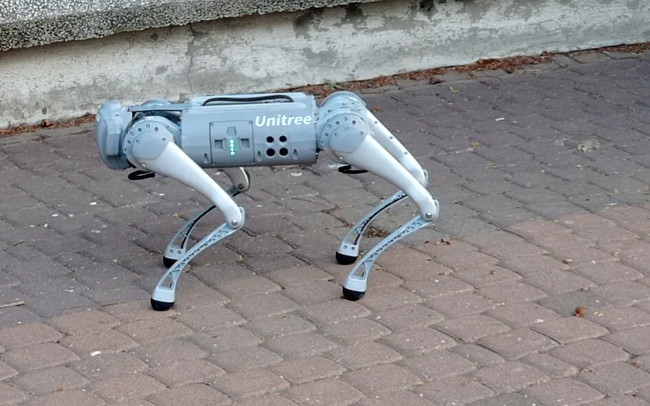

Hi, I'm Dennis. I specialize in HCI research and embedded systems.
I specialize in UX design and human-computer interaction. I work under HCI researcher Dr. Md Baharul Islam at Florida Gulf Coast University, where I invented a wearable to reduce motion sickness in VR. I provide extensive experience in user-experience research, survey design (SSQ and TLX), along with experience in PCB design, C/C++ embedded programming, and rapid hardware/software prototyping.

- PublicationFirst author, IEEE ICIICE 2026Engineering validation study for my VR motion sickness wearable, including evaluation of a custom 3D printed housing, PCB, and firmware I designed.
- PatentCo-inventor of Jerk Triggered Bone Conducted Vibration for VR Cybersickness ReductionInventor of a novel method of timing bone conduction based on vestibular physiology.
- Hackathons5-time Hackathon WinnerIncluding a double victory at EagleHacks 2026 (1st Place Overall and 1st Place Arthrex Challenge), which led to my current Arthrex capstone.
- Survey design · SSQVR motion-sickness studyCurrently planning a validation study to demonstrate feasibility of my VR motion sickness wearable, planning IRB and SSQ (Simulator Sickness Questionnaire) survey design.
- Survey design · NASA TLXSenior Capstone: Hand-tracking VR Interaction library for ArthrexCurrently involved in qualitative and quantitative factors research for Arthrex, designing a hand-tracking interface using the Meta Interaction SDK. Collaborating with FGCU to host usability studies in the Viper Lab.
- Customer researchCustomer Research ExperienceDuring my internship at NextEra Energy, I interviewed users to solicit requirements and iterate functional prototypes. For my Arthrex Capstone, I am soliciting qualitative feedback from users, alongside the usage of quantitative surveys, such as the NASA TLX.
Selected work

A VR motion-sickness wearable that clips to the headset
Bone-conducted vibration timed to the moments VR is most likely to make you sick. I designed and built it end to end, from the circuit board to the host software.

A hand-tracking UI library for surgical VR
Arthrex uses VR in its core surgical work, from training to operating-room design. I'm building the hand interactions in Unreal Engine.

OrthoVision, a hands-free interface for assisting with orthopedic surgery.
3D anatomy in the browser for surgeons and patients, driven by hand gestures and voice. It also won the Arthrex Challenge.

Idle EV chargers were an information problem
Customer research with drivers and designers moved the fix from reservations to live charge status.

Getting around when the street isn't built for you
A robot guide-dog simulation on real Miami street layouts, and sign-language AR research.
Smaller projects, awards and skills are on the About page.
Photos: operating room, Arthrex. EV charging in Wiesbaden, Matti Blume, CC BY-SA 4.0. Robot guide-dog prototype, DGtal, CC BY 3.0, cropped.
.jpg){kind=link}